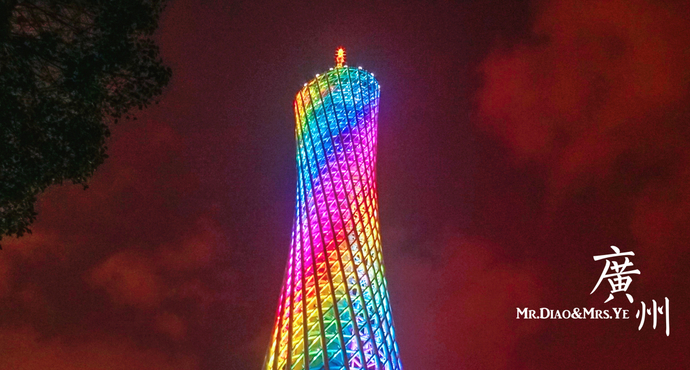

<!DOCTYPE html>
<html lang="zh">

<head>
    <title>leadlet+高德地图 测试</title>
    <!-- <meta charset="utf-8" /> -->
    <!-- <meta name="viewport" content="width=device-width, initial-scale=1.0"> -->
    <link rel="stylesheet" href="https://unpkg.com/leaflet@1.0.3/dist/leaflet.css" />
    <script src="https://unpkg.com/leaflet@1.0.3/dist/leaflet.js"></script>
</head>

<body>
    <!-- <div id="mapid" style="width:600px; height:400px"></div> -->
    <div id="mapid" style="height:800px"></div>  
    <!-- 必须指定高度 -->

    <script>
        var mymap = L.map('mapid',{
            zoom: 10,  //初始聚焦程度
            center: [23.16, 113.23],  //广州 [lat, lng] [纬度, 经度]
            minZoom: 3,  //最宽广，越小越宽广
            maxZoom: 18, //最细致，越大越细致
        })
        L.tileLayer('https://webrd0{s}.is.autonavi.com/appmaptile?lang=zh_cn&size=1&scale=1&style=8&x={x}&y={y}&z={z}', {
            subdomains: ["1", "2", "3", "4"], //可用子域名，用于浏览器并发请求
            attribution: "&copy; 高德地图", //可以修改为其它内容
        }).addTo(mymap); //添加tile层到地图

        var guangZhouTa = [23.106375,113.323618];
        var marker = L.marker(guangZhouTa).addTo(mymap);
        // 失败
        // function loadImage(){
        //     alert("hhhhh")
        //     marker.update()
        // }
        // marker.bindPopup('', {
        //     maxWidth: "auto"
        // })
        // 失败
        // window.onload = function(){ 
        //     var myimg = document.getElementById("myimg")
        //     myimg.onload = function(){
        //         marker.openPopup();
        //     }
        // }; 

        var popupContent = document.createElement("img");
        popupContent.onload = function () {
          // marker.openPopup();
          marker.update();
        };
        popupContent.src = "guangzhouta.jpeg";
        marker.bindPopup(popupContent, {
          maxWidth: "auto"
        }); //为了图片出现的位置正确, 参考http://stackoverflow.com/questions/38170366/leaflet-adjust-popup-to-picture-size

        var popup = L.popup();
        function onMapClick(e) {
            popup
                .setLatLng(e.latlng)
                .setContent("您所点击的位置的经纬度为" + '<br>' + e.latlng['lng'] + '<br>' + e.latlng['lat'])
                .openOn(mymap);
        }
        mymap.on('click', onMapClick);
    </script>
</body>

</html>